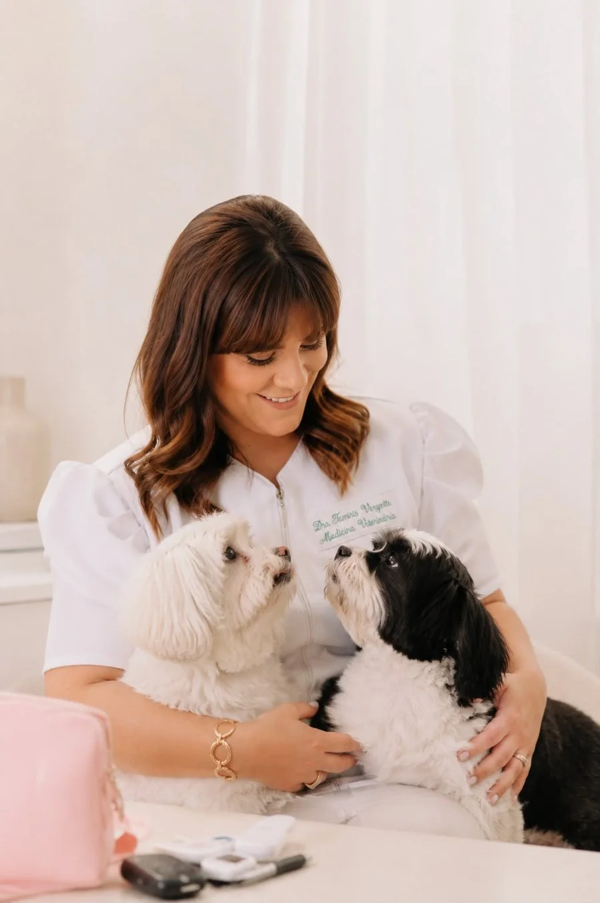
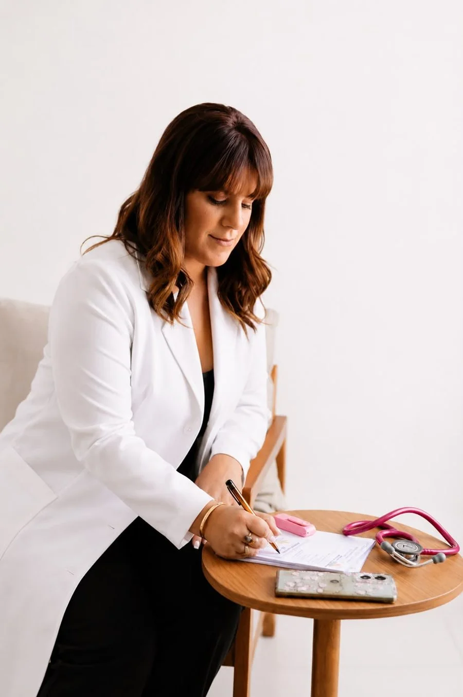
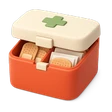

Consultas em domicílio
- Avaliação clínica e exame físico completo
- Atendimento e acompanhamento de casos clínicos
Atendimento veterinário completo no conforto da sua casa, para cães e gatos, com a Dra. Tamiris Vergette.
Atendo cães e gatos, com hora marcada


Desde pequena, os animais sempre fizeram parte da minha vida. Cresci cercada por eles e, ainda criança, já sabia que queria transformar esse amor em profissão.
Minha trajetória até a Medicina Veterinária não foi fácil. Foram anos de desafios, obstáculos e muita persistência, mas nunca deixei de acreditar no meu sonho. Depois de muitos anos de dedicação, finalmente consegui me formar e vestir o tão sonhado jaleco.
Hoje, como médica-veterinária, encontrei no atendimento em domicílio uma forma de unir minha paixão pelos animais a um atendimento mais próximo, humanizado e individualizado.
Acredito que ser veterinária vai muito além de tratar doenças. É cuidar, prevenir, acolher e construir uma relação de confiança com cada animal e sua família.
Tudo o que vivi até aqui faz parte da profissional que sou hoje — e sigo estudando, aprendendo e evoluindo para oferecer sempre o melhor cuidado aos meus pacientes.
Falar com a Dra. TamirisMeu sonho começou na infância. Hoje, ele é a minha profissão e o meu propósito.
Conta um pouco sobre o seu pet e o que precisa.
Escolhemos o dia e a hora que funcionam para você.
Com o material necessário para o atendimento.
No ambiente do seu pet, com as orientações na hora.

Sem transporte, caixa de transporte ou sala de espera.
Menos estresse para o pet durante o exame.
Atendimento combinado, sem fila de espera.
Um vínculo que acompanha a história do seu pet.
Não tem certeza se seu bairro está na área de atendimento? Me chama no WhatsApp que eu confirmo.
Confirmar se atende minha regiãoNão precisa de nada especial — só deixar o seu pet à vontade no ambiente de sempre.
O valor varia conforme o serviço. Me chame no WhatsApp e te passo os valores.
Esse atendimento é voltado para consultas, exames e procedimentos de rotina — não para casos de urgência. Em caso de emergência, o mais indicado é procurar um hospital veterinário 24h. Na dúvida se o seu caso é uma emergência, me chame que eu te oriento.
Sim, atendo cães e gatos.
Aceito Pix, dinheiro e cartão.
Me chama no WhatsApp e vamos combinar o melhor dia e horário para a consulta.
Chamar no WhatsApp agora